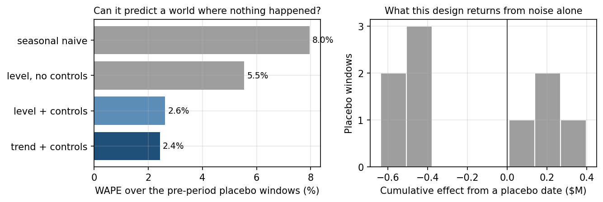

3.4 Impact causal avec les séries temporelles
À propos de la version française
Cette page est une traduction par IA de la version anglaise de Marketing Science in Python. La version anglaise fait foi et prévaut en cas de divergence. Le code, les notebooks et le texte intégré aux images restent en anglais. Lire la version anglaise
Chaque protocole du chapitre précédent disposait d’un groupe témoin. Certains magasins avaient reçu le présentoir, d’autres non. Un marché avait été exposé à la campagne, les autres non. Ce chapitre traite du cas où il n’existe aucun groupe témoin.
Une campagne télévisée nationale a duré huit semaines. Les ventes ont augmenté. Mais tous les marchés ont été exposés, donc aucun marché non traité ne permet de comparaison. Quelles auraient été les ventes sans la campagne ?
Ce chapitre a un seul objectif : construire cette trajectoire manquante sans campagne et décider si elle est suffisamment crédible pour servir à mesurer la campagne. La construction tient en quinze lignes de code. Décider si l’on peut s’y fier occupe le reste du chapitre.
Construire le contrefactuel
Idée centrale : prévoyez les ventes que vous auriez observées sans la campagne. L’effet correspond aux ventes observées moins cette prévision.
Sans groupe témoin, la comparaison doit venir du temps. Ajustez un modèle de séries temporelles aux ventes avant la campagne, pour qu’elle ne puisse pas s’y introduire. Projetez le modèle sur la fenêtre de campagne. Cette projection est le contrefactuel, et l’écart entre elle et ce qui s’est réellement passé est l’effet estimé.
La prévision peut tout de même utiliser des séries de contrôle, et il convient de préciser qu’elles ne constituent pas un groupe témoin. Un groupe témoin se compose d’unités non traitées de même nature : des magasins qui n’ont pas reçu le présentoir. Une série de contrôle est un prédicteur : toute série que la campagne ne pouvait pas affecter, comme un indice de demande de la catégorie ou une gamme de produits apparentée sans soutien média. Elle n’est pas comparée à la marque. Elle indique à la prévision comment le marché évoluait pendant la campagne.
L’implémentation la plus connue est CausalImpact, que Google a publié sous forme de package R et que Brodersen et ses collègues ont décrit dans un article de 2015. Dans la littérature sur l’inférence causale, le même protocole est appelé série temporelle interrompue. Des portages Python existent (tfp-causalimpact, et InterruptedTimeSeries dans CausalPy). Ce chapitre construit directement la même logique avec statsmodels, pour que chaque hypothèse reste visible.
C’est le dernier échelon de l’échelle du chapitre précédent, et le tableau montre ce qui a changé en la montant :
| Caractéristique du protocole | DiD | Contrôle synthétique | CausalImpact |
|---|---|---|---|
| Unités non traitées nécessaires | Un groupe témoin | Un ensemble de donneurs | Aucune ; les séries de contrôle sont des prédicteurs, pas des comparaisons |
| La comparaison provient de | La variation du groupe témoin au fil du temps | Une combinaison pondérée de l’ensemble de donneurs | Une prévision fondée sur le passé de la série elle-même |
| L’hypothèse que vous ne pouvez pas tester | Tendances parallèles | L’ajustement de la période préalable reste valable | Les séries de contrôle sont restées non affectées |
L’exemple détaillé porte sur une marque nationale de produits de grande consommation : quatre années de chiffre d’affaires hebdomadaire, une campagne télévisée et de relations publiques de huit semaines, puis vingt semaines d’observation. Deux séries de contrôle : un indice de demande de la sous-catégorie et une gamme de produits apparentée qui n’a reçu aucun soutien média. Les données sont synthétiques, donc la véritable trajectoire sans campagne est connue. Avant tout code, le cadrage :
- Question métier : Quel chiffre d’affaires incrémental la campagne a-t-elle généré ?
- Variable de résultat : Le chiffre d’affaires national hebdomadaire.
- Traitement : La campagne de huit semaines associant télévision et relations publiques, mesurée comme une intervention combinée unique.
- Estimand : Le chiffre d’affaires incrémental cumulé sur les 28 semaines suivant le lancement, y compris les effets persistants et toute baisse compensatoire ultérieure.
Cette dernière ligne est une décision, prise maintenant, avant que quiconque ait vu un chiffre. C’est pourquoi la prévision ci-dessous porte sur 28 semaines, et pourquoi la section consacrée plus loin à la fenêtre de restitution est une vérification plutôt qu’un choix.

Voici le code qui construit le contrefactuel :
import numpy as np
from statsmodels.tsa.statespace.structural import UnobservedComponents
# 1. Fit on the PRE-period only. The campaign is deliberately absent.
model = UnobservedComponents(
np.log(y_pre),
level="lltrend", # level and slope
freq_seasonal=[{"period": 52, "harmonics": 2}], # annual shape
exog=np.log(x_pre), # untouched controls
)
res = model.fit(disp=0)
# 2. Simulate 1,000 no-campaign paths across the 28 post-period weeks
horizon, draws = len(y_post), 1000
paths = np.exp(
np.asarray(res.simulate(horizon, repetitions=draws, anchor="end",
exog=np.log(x_post))).reshape(horizon, draws)
)
# 3. Effect = observed minus counterfactual. The point estimate and the
# interval come from the same draws, so both summarize one distribution.
counterfactual = paths.mean(axis=1)
weekly_effect = y_post - counterfactual
cumulative = weekly_effect.sum()
lo, hi = np.percentile((y_post[:, None] - paths).sum(axis=0), [2.5, 97.5])Trois choix dans ce code comptent. Le modèle est ajusté uniquement sur la période préalable, pour que la campagne ne puisse pas contaminer sa propre référence. Les ventes sont modélisées en logarithmes, car l’augmentation due à une campagne et la saisonnalité sont toutes deux multiplicatives, et les trajectoires simulées sont reconverties en dollars avant toute somme. Enfin, les séries de contrôle entrent comme régresseurs, pour que la prévision sache ce qu’a fait le marché pendant la campagne. Savoir si le modèle a aussi besoin d’un terme de tendance, ou même des séries de contrôle, n’est pas une affaire de goût. La section suivante tranche par la mesure.
Valider le contrefactuel avant de mesurer
Cette étape n’est pas facultative. L’effet que vous présenterez correspond à l’observation moins la prévision, donc chaque dollar d’erreur de prévision devient un dollar d’effet fictif. Avant d’utiliser la prévision pour mesurer la campagne, vous devez montrer qu’elle peut prédire une période où rien ne s’est passé. Trois vérifications le permettent, et toutes trois portent exclusivement sur la période préalable.
Tester rétrospectivement la prévision
Le modèle peut-il prédire le monde sans traitement ? Faites comme si la campagne avait commencé à une date antérieure, au sein de la période préalable. Ajustez le modèle sur les données précédant cette date, prévoyez les vingt-huit semaines suivantes et comparez à ce qui s’est réellement passé. Répétez à partir de plusieurs dates. Vingt-huit semaines parce que c’est l’estimand du cadrage, et qu’un modèle satisfaisant sur huit semaines peut s’effondrer sur vingt-huit.
| Spécification | Erreur de prévision | Biais | Couverture de l’intervalle |
|---|---|---|---|
| Prévision naïve saisonnière | 7.96% | -5.83% | s. o. |
| Niveau, sans séries de contrôle | 5.54% | -1.32% | 99.6% |
| Niveau + séries de contrôle | 2.62% | -0.60% | 96.8% |
| Tendance + séries de contrôle | 2.43% | +0.48% | 87.7% |
Le tableau dicte la décision. La tendance avec séries de contrôle présente l’erreur la plus faible et le biais le plus faible : c’est donc la spécification retenue. Deux détails comptent au passage. Les séries de contrôle divisent l’erreur par deux : sur ces données, elles justifient donc leur présence. Et le terme de tendance compte à cet horizon : la marque progresse plus vite que sa sous-catégorie, et un modèle sans pente attribuerait cet écart à la campagne.
Interventions placebo
Le protocole invente-t-il des effets lorsqu’il ne s’est rien passé ? Choisissez une date dans la période préalable, par exemple la semaine 120, où il n’y avait pas de campagne. Faites comme si une campagne avait commencé cette semaine-là et exécutez l’analyse complète. La bonne réponse est zéro, donc tout résultat obtenu correspond à ce que ce protocole produit à partir du bruit. C’est une intervention placebo, et les neuf fenêtres de validation rétrospective ci-dessus servent aussi de neuf placebos. Ici, le plus grand effet placebo était de $636k, et l’un des neuf a donné un intervalle excluant zéro. Gardez ces deux chiffres en tête. L’estimation de la campagne doit franchir ces deux repères.

Vérifier que les séries de contrôle sont utiles
Les séries de contrôle améliorent-elles réellement la prévision ? La validation rétrospective a déjà répondu oui sur ces données, et il est utile de voir ce que cela apporte. Dans un monde calme, les séries de contrôle divisent la largeur de l’intervalle par douze. Lorsqu’un recul de l’ensemble de la catégorie touche trois semaines de la campagne, l’estimation avec séries de contrôle se situe à moins de 1,3 % de la vérité, car le contrefactuel recule avec le marché. Sans séries de contrôle, le même recul est imputé à la campagne, et l’estimation se situe 21 % en dessous de la vérité. C’est ce que fait une bonne série de contrôle : elle absorbe les chocs qui touchent tout le monde, pour que le modèle ne les confonde pas avec la campagne.
Cela ne fonctionne que si la campagne n’a pas affecté la série de contrôle. C’est l’hypothèse qui ne peut pas être testée à partir des données, et elle a sa propre section, Quand ne pas se fier à l’estimation.
Estimer l’effet de la campagne
Ce n’est que maintenant que la fenêtre de campagne est utilisée. La spécification choisie est ajustée sur l’ensemble de la période préalable, puis projetée vers l’avenir. Le résultat est le graphique à trois panneaux devenu la présentation habituelle d’une campagne ponctuelle : observations face au contrefactuel, écart hebdomadaire et cumul progressif.

Choisir la fenêtre de restitution
Le cadrage a fixé l’estimand à 28 semaines. Voici pourquoi cela comptait. Regardez le panneau du cumul : la courbe monte pendant les huit semaines de diffusion, continue à monter quelques semaines après grâce aux effets persistants, puis redescend lorsque la demande anticipée se traduit par une baisse compensatoire. Trois fenêtres, chacune apparemment raisonnable, donnent trois chiffres différents.
| Fenêtre de restitution | Estimation | Intervalle à 95 % | Vérité | Erreur |
|---|---|---|---|---|
| Diffusion seule, 8 semaines | $1,157k | $844k à $1,446k | $1,291k | -10.4% |
| Diffusion et effets persistants, 12 semaines | $1,603k | $1,174k à $1,996k | $1,574k | +1.8% |
| Fenêtre postérieure complète, 28 semaines | $1,164k | $411k à $1,890k | $1,124k | +3.6% |
Les trois estimations sont exactes pour la fenêtre qu’elles couvrent. Seule la dernière répond au cadrage, car elle seule comptabilise la baisse compensatoire. S’arrêter à la semaine 12, au sommet de la courbe, surestime la réponse complète de 38 %. Le modèle n’était pas en cause. La fenêtre l’était. Voilà pourquoi la fenêtre figure dans le cadrage, avant que quiconque regarde la courbe.
Quelle confiance accorder à l’intervalle
La bande du graphique maintient le modèle ajusté fixe et propage son bruit vers l’avenir. Elle constitue donc un plancher de l’incertitude réelle, pas sa totalité. Deux éléments aident à l’interpréter. D’abord, les résultats placebo : l’estimation de $1,164k dépasse tous les effets placebo produits par ce protocole, dont le plus grand était de $636k. C’est une indication plus utile qu’une valeur p, car elle s’exprime dans les mêmes unités que la décision. Ensuite, l’audit ci-dessous.
Le notebook réexécute la spécification choisie sur deux cents nouveaux jeux de données synthétiques et l’évalue chaque fois par rapport à la vérité. L’intervalle nominal à 95 % couvre la vérité dans 90 % des cas. Un effet réel est signalé comme significatif dans 60 % des cas. Lorsque l’effet réel est nul, il est déclaré significatif dans 9 % des cas. Ce n’est pas un modèle faible. C’est une situation de mesure peu favorable : une seule série traitée, aucune randomisation, un effet faible par rapport au bruit. Si la décision exige davantage, menez une expérience géographique la prochaine fois (chapitre 6.3).
Quand ne pas se fier à l’estimation
Trois choses invalident cette analyse. Deux d’entre elles ne laissent aucune trace dans les données.

La campagne a affecté une série de contrôle
Plus une série de contrôle est prédictive, plus il est probable que la campagne l’ait touchée. L’indice de la sous-catégorie porte l’essentiel du pouvoir explicatif du modèle, et c’est précisément pourquoi une campagne nationale pour une grande marque de cette sous-catégorie le menace. Faites passer 35 % de l’augmentation de la marque dans l’indice, et l’estimation ne conserve que 65 % de l’effet réel, avec un intervalle qui n’exclut plus zéro. Une campagne qui a fonctionné paraît désormais non concluante. Et tous les diagnostics sont satisfaisants : l’ajustement sur la période préalable est bon, l’intervalle est étroit, la validation rétrospective ne change pas. L’hypothèse violée se situe en dehors des données. La seule façon de la vérifier est de demander aux personnes qui ont mené la campagne ce qu’elle aurait pu affecter.
La relation de la période préalable s’est rompue
Une relation qui a tenu pendant quatre ans peut tout de même s’interrompre. Supposons qu’un concurrent entre sur le marché et fasse croître la sous-catégorie de 5 % sur la période postérieure, sans que cette marque en bénéficie. Les séries de contrôle indiquent désormais que le marché s’est amélioré, le contrefactuel augmente, et l’estimation ressort à moins $460k pour un effet réel de plus $1,124k. C’est le seul scénario du chapitre où la vérité se trouve hors de l’intervalle, et il n’est par construction pas testable à partir des données de la période préalable. C’est la même discipline que celle exigée par les DiD : le résultat ne vaut que ce que vaut l’affirmation selon laquelle les séries de contrôle ont continué à se comporter comme auparavant.
La prévision n’a jamais été assez bonne
La troisième défaillance laisse bien une trace, si vous la cherchez. Appliquez la même procédure à des données réelles de magasins Dunnhumby : prenez les ventes hebdomadaires d’un magasin, multipliez les douze dernières semaines par 1,15 et essayez de retrouver l’augmentation injectée en utilisant quatre autres magasins comme témoins.
L’augmentation est retrouvée. Les 1 775 unités injectées sont estimées à 1 833, avec un intervalle qui exclut zéro. Il serait facile de présenter cela comme une analyse réussie avec témoins.

Ce n’en est pas une. La corrélation entre magasins qui justifiait les témoins était de 0,45, mais le panel Dunnhumby commence petit puis grandit, si bien que tous les magasins progressent ensemble pour des raisons sans rapport avec la demande. Retirez cette phase de montée en charge et la corrélation tombe à 0,01. La validation rétrospective tranche : ajouter les quatre magasins témoins fait passer l’erreur de prévision de 13,7 % à 13,8 %, autrement dit ne change rien. L’intervalle plus étroit est le piège. Des régresseurs supplémentaires absorbent la variation dans l’échantillon et resserrent la bande même lorsque la prévision ne s’améliore pas. Un intervalle plus étroit ne prouve pas que les séries de contrôle ont aidé. Une meilleure validation rétrospective, si. Ce qui a produit le chiffre était une projection du niveau récent du magasin lui-même, et une erreur de prévision de 13,7 % traduit une performance trop faible pour étayer une affirmation causale. Le dire constitue le résultat de l’analyse.
Une démarche pratique
Le chapitre se résume en huit étapes. Exécutez-les dans l’ordre.
- Rédigez le cadrage. Question métier, variable de résultat, traitement et estimand avec sa fenêtre de restitution. Fixez-le avant de voir un chiffre.
- Choisissez les séries de contrôle. Ce doivent être des séries que la campagne ne pouvait pas affecter. Interrogez les personnes qui l’ont menée.
- Ajustez uniquement sur la période préalable.
- Testez rétrospectivement le contrefactuel à l’horizon que vous présenterez. Choisissez la spécification d’après cette validation, pas selon vos préférences.
- Exécutez des interventions placebo. Sachez ce que le protocole produit à partir du bruit avant de lire le vrai chiffre.
- Estimez l’effet sur la période postérieure pour la fenêtre fixée à l’étape 1.
- Mettez les séries de contrôle à l’épreuve. La campagne aurait-elle pu les affecter ? La relation de la période préalable aurait-elle pu se rompre ?
- Si le contrefactuel est faible, ne présentez pas de chiffre causal. Une erreur de validation rétrospective de 13,7 % correspond à une prévision, pas à une mesure.
CausalImpact ne transforme pas des données observationnelles en expérience. Il vous donne une façon structurée de déterminer si une série temporelle peut étayer un contrefactuel crédible. Lorsque ce n’est pas le cas, la réponse n’est pas un meilleur modèle. C’est une meilleure expérience la prochaine fois (chapitre 6.3).
Notebook d’accompagnement : sec3.4_causal_impact.ipynb construit le contrefactuel, le valide sur des dates placebo, audite son intervalle sur deux cents tirages, puis le met délibérément en échec.
Voir sur GitHub
Points à retenir
- Sans groupe témoin, prévoyez la trajectoire sans campagne à partir de la période préalable et de séries que la campagne ne pouvait pas affecter, puis justifiez cette prévision par des validations rétrospectives à l’horizon que vous présenterez.
- Deux défaillances ne laissent aucune trace dans les données : une série de contrôle affectée par la campagne et une relation de la période préalable qui s’est rompue. Un intervalle plus étroit ne prouve pas que les séries de contrôle ont aidé ; une meilleure validation rétrospective, si.
- Fixez la fenêtre de restitution avant de voir un chiffre. S’arrêter au sommet de la courbe cumulée a surestimé de 38 % la réponse sur la fenêtre complète.